Favorite characters!
Just another section about killing cringe and trying to verbalize/analyze why I find something interesting, the media characters edition these time. Plus, I'm genuinely curious about the, well, statistics :D
Probably won't have any specific logic behind the characters order, nor do I plan to group same setting characters together. Maybe I will keep more or less close archetypes together or something like that, but, well, we'll see. For now that's in a just let it exist first stage anyway.
/ last upd. 6 nov 2026
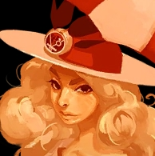
Sybil Reisz
Transistor
No, not another placeholder cameo this time! I love everything about this game and oh I do adore everything that's wrong with this woman. My precious jealous and obsessive mewmew, the first actual boss of the game and a deeply tragic character, in my opinion (on the other hand, who in this game isn't?)
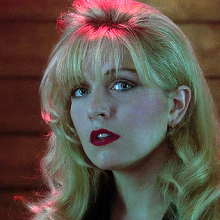
Laura Palmer
Twin Peaks
My favorite narrative ghost, what else can I say. Well, no, I can say quite a lot, but that would look like incoherent ramblings. God, I'm so sorry all that heartbreakingly horrific things happened to her. She basically lived in hell, and people she cared about the most had no idea about it. Everybody loved Laura Palmer, but nobody ever knew Laura Palmer. «A mystery» who was just a traumatized and lonely young girl, failed by her own family in the worst way possible. Sigh.
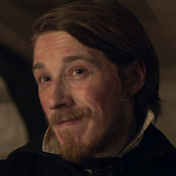
Cornelius Hickey
The Terror
My most recent new favorite character (as of 3 nov 2026)! Everything is fundamentally wrong with him, and that's so entertaining to watch. Also, bro literally looks like a jack russell terrier gjinka, isn't that amazing.
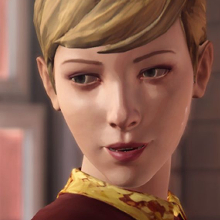
Victoria Chase
Life is Strange
I don't normally sympathize with bully characters (a certain Bakugo is literally a public enemy in this lands/hj), but it's just so hard for me to take her attempts to be edgy and mean seriously*. I love that she's Max's narrative foil, while she's literally also a hipster nerd, just fancier. I love that she's as performative as she is insecure and Is very much a wet cat of a person.
* Speaking of her relationships with Max, not touching the Kate's case, which was objectively awful.
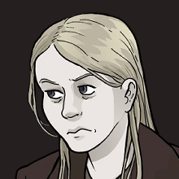
Tabitha Scarlet
Scarlet Hollow
Speaking of the wet cats. The game's writing is genuinely amazing, and Tabitha is, in my opinion, one of the most interesting, nuanced and sympathetic ones, while being a deeply flawed person with hilarious opinions on things.
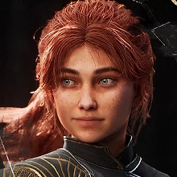
Maelle / Alicia
Clair Obscur: Expedition 33
The most kitten-coded fencer ever. And, naturally, my little mew mew. I try to avoid spoilers on this page so I don't think I can tell much, but everything about her story is so insanely good. Also heartbreaking as hell, but, well, the whole game is.
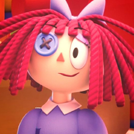
Ragatha
The Amazing Digital Circus
She's so precious to me. I feel a bit sad about the way the show failed her at some point, when everyone are like 'ohhh she's such a people pleaser it's hard to tell what she really thinks of you and if she's sincere!' and im like woa intriguing I love my neurotic controlfreaks failing dramatically! ..aand this assumptions just lead nowhere, not even from further debunking them perspective. She's Just Actually very nice and polite and trying her best yet no she's very direct that she's not okay with Jax's bullshit for example so basically zero basis of the 'fakeness' or 'hypocrisy' of Ragatha noticed. The anger management issues of her from early concepts look quite intetresting, though!
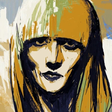
Klaasje
Disco Elysium
An angsty, angsty lady self-saboteur, my beloved. She's a personification of so many character archetypes I'm obsessed with, there was basically zero chances I wouldn't love her.
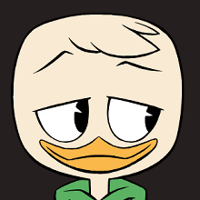
Louie Duck
DuckTales (2017)
A quitter and a schemer, my favorite little guy. Extremely entertaining to watch + ough it does make me embarassingly sentimental anytime the cartoon addresses he is a younger sibling/when he's being obviously vulnerable :((
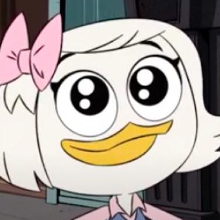
Webby Vanderquack
DuckTales (2017)
I love the optimists and I will always feel for all the weird girls, struggling to fit in. I basically adore everything about her fhfhhfhjdj the tiniest (and the deadliest, she's a girl of many contrasts)
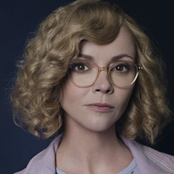
Misty Quigley
Yellowjackets
Speaking of the weird girls, behold the final boss. She's SUCH an iconic character, like, I've never ever seen someone both As sympathetic and miserable and treated unfairly AND someone doing such sincerely fucked up and unhinged shit at the same time. Chiefs kiss, I will never have enough of this dudess and her shenanigans. If s4 would end up with 'the final girl' trope, I'm rooting for it to be Misty so bad, not even due to favoritism but because well. Wouldn't that be funny if even in this situation she would be sort of an outcast still.
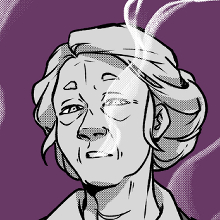
Gertrude Robinson
The Magnus Archives
Ironically, my very favorite character of the podcast is the one who didn't make it to the main plot. The TMA itself is an absolute gem of the most interesting characters and dinamics in media in my opinion, but I can't even tell What they added to everything about Gertrude. She was THE archivist, 10 cruel choices for The Greater Good, broken rituals and narrative haunting out of 10
Artwork credits to Occudo on Tumblr